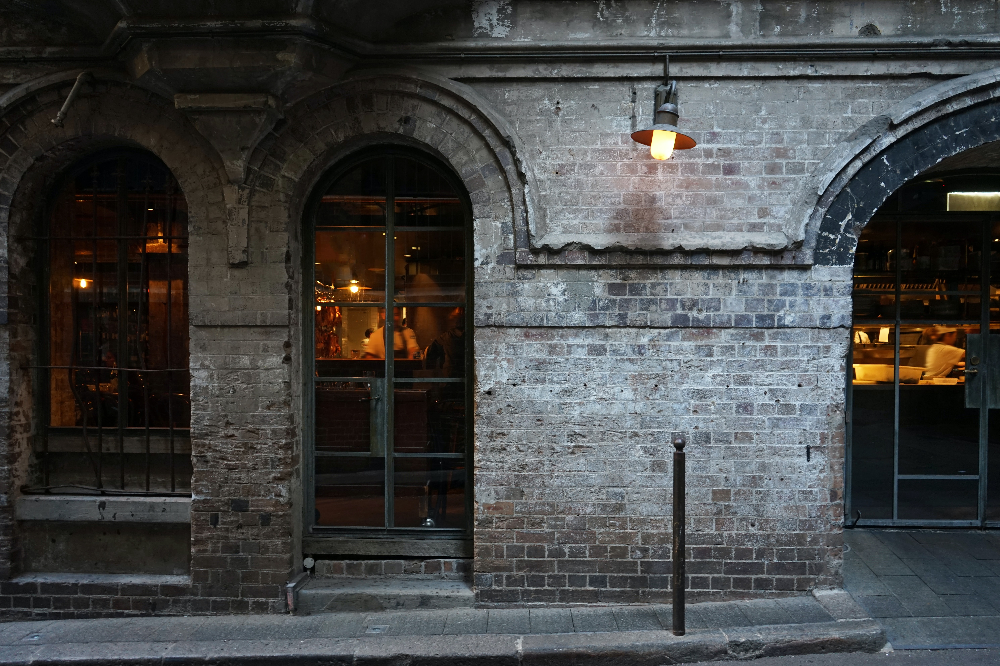
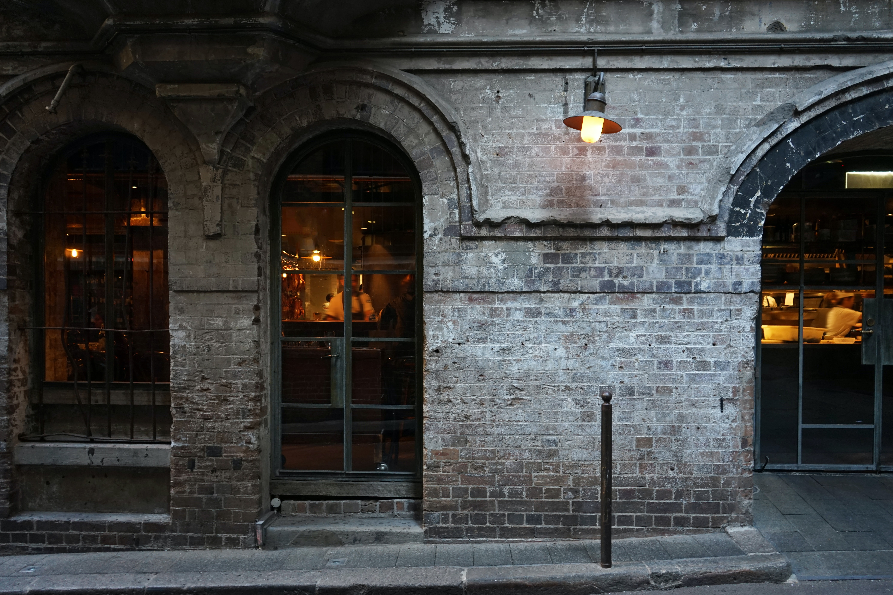

HISTORIEN BAK OSLOMET CAFE OG CATERING
OsloMet Kafé var OsloMets aller første spisested, og har mer historie bak seg enn det mange ville tro. Kafén har eksistert i lang tid, langt lengre enn OsloMet og har dermed vært igjennom en rekke endringer og navn. Vi åpnet dørene for første gang i 1861, på Pilestredet 52, under Frydenlund Bryggeri Kafé. Kun 2 år etter Frydenlund Bryggeri ble grunnlagt. Vår kafé var et sted fabrikkarbeiderne kunne spise og drikke i pausene sine. Det var et sted for sosiale relasjoenr og bånd, et sted arbeiderne kunne få et avbrekk fra arbeidet, og bli motivert til å fortsette dagen. I lang tid fungerte kafén vår kun for fabrikkarbeiderne, men i 1977 omgikk vi en del endringer, kafén ble åpnet for alle og enhver som trengte påfyll i hverdagen, vi endret lokalet til Pilestredet 46, og kafén endret navn til Frydenlund kafé og catering. Her fikk vi et større lokalet og startet dermed å leie ut lokalet til små sammenkomster og større selskap. I 2011 tok HiOA over kafén da de begynte å bygge ut skolelokaler, og senere i 2018 endret kafén navn fra HiOA kafé og catering, til det vi i dag kjenner godt, OsloMet kafé og catering.
Kafén er fortsatt tilgjengelig for alle som skulle ønske å besøke, men vår hovedmålgruppe er så klart studentene som bruker studiehverdagen sin i lokalene på Pilestredet. På vår kafé har vi alltid verdsatt godt arbeid og dette ser vi også i våre kunder, fra hardt arbeidende fabrikkarbeidere, til våre ambisiøse studenter. Det er en glede for oss å kunne fortsette å gi et avbrekk i arbeidet, like mye i dag som for 150 år siden!


 
